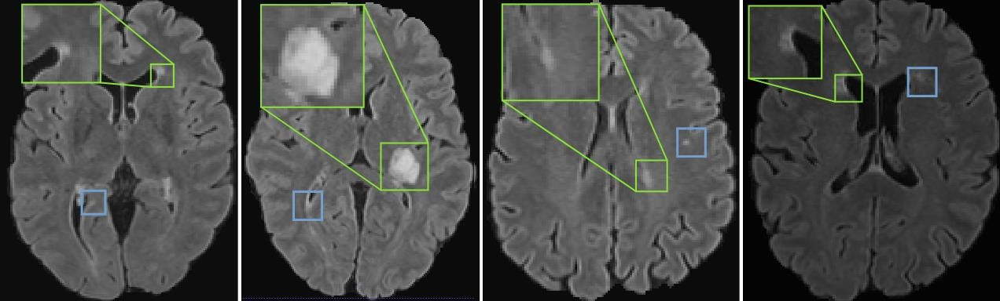
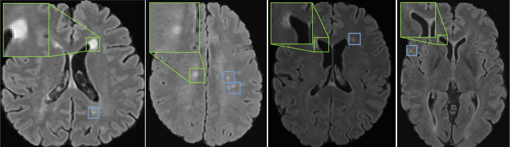

Lesion detection and features
Segment lesions in 3D MRI and extract learned features from lesion-centered image patches.
MICCAI 2023
Self-Pruning Graph Neural Network for Predicting Inflammatory Disease Activity in Multiple Sclerosis from Brain MR Images
Original paper · Figure 1

Figure 1. Original method overview from the MICCAI 2023 paper.
Overview
Inflammatory multiple-sclerosis lesions vary greatly in count, size, and location. The paper represents detected lesions as nodes in a patient-specific graph and uses graph neural networks with a learnable self-pruning module to identify influential lesions and predict future inflammatory disease activity.
Approach
Segment lesions in 3D MRI and extract learned features from lesion-centered image patches.
Make lesions graph nodes; connect spatially neighboring lesions and process the graph with a GNN.
Score lesion importance, retain the most relevant nodes, and aggregate them for graph-level inflammatory activity prediction.
Research directions
Accommodate varying numbers of lesions and spatial distributions across patients.
Study one-year and two-year future inflammatory activity using baseline MR images.
Assign relative importance scores to individual lesions that contribute to the model prediction.
Original paper results
The self-pruning module assigns an importance score to each detected lesion. The figures below show examples of the lesions selected or discarded for inflammatory disease activity prediction.

Figure 3. Selected lesions (green) and discarded lesions (blue), illustrated on brain MRI.

Supplementary Figure 5. Additional examples of lesion selection using the self-pruning module.
Reported results
The paper reports improved AUC compared with its baseline for both prediction horizons in the evaluated cohort.
Reported in the MICCAI 2023 paper. These are study-specific results, not clinical performance guarantees.
Resources
The official repository provides code for constructing patient-level graphs and training the graph-based prediction model. Clinical datasets are not published in the repository.
Reference
@inproceedings{prabhakar2023selfpruning,
title = {Self-Pruning Graph Neural Network for Predicting Inflammatory Disease Activity in Multiple Sclerosis from Brain MR Images},
author = {Prabhakar, Chinmay and Li, Hongwei Bran and Paetzold, Johannes C. and Loehr, Timo and Niu, Chen and M{\"u}hlau, Mark and Rueckert, Daniel and Wiestler, Benedikt and Menze, Bjoern},
booktitle = {Medical Image Computing and Computer Assisted Intervention -- MICCAI 2023},
pages = {226--236},
year = {2023},
publisher = {Springer},
doi = {10.1007/978-3-031-43993-3_22}
}